| 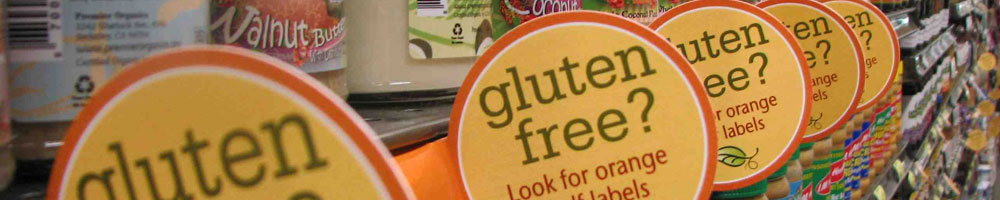 |
Home About Me Brands A-Z Restaurants What I've Learned Get Connected
|
A-IA: Ancient Harvest- Makes a great quinoa and quinoa pasta. I love the Harmony Blend quinoa, perfect for bringing to work for lunch. All natural and available in most grocery stores. All products come in a turquoise box.
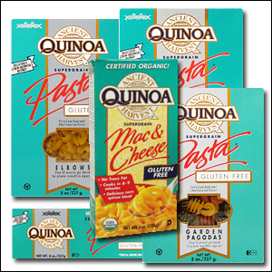 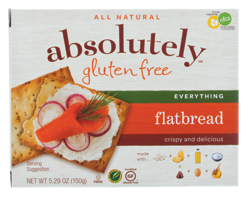 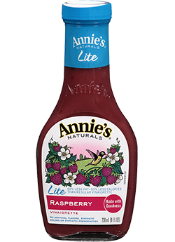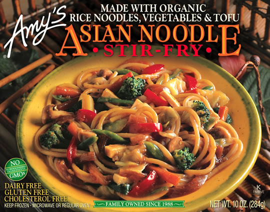 B: Bob’s Red Mill- This brand is great for flour blends. If you don’t already know, gluten-free baking can involve complicated flours such as White rice Four, Xanthum gum, and chickpea flour. Bob’s red mill has them all for pretty good prices.
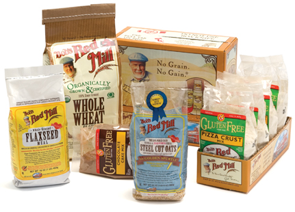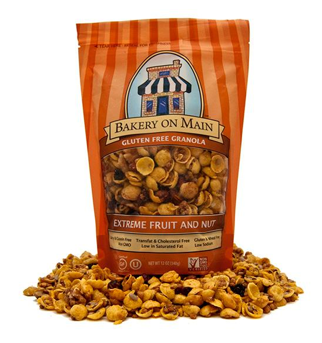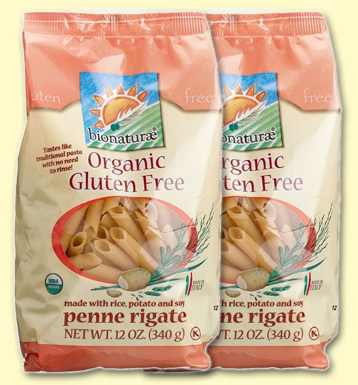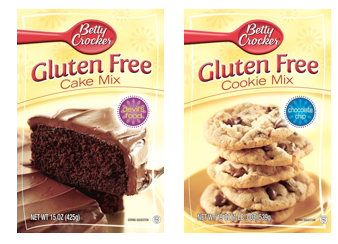 C: Chebe- This is a bread mix company that has gotten great reviews by my gf family members. I’ve never personally worked with it but I’ve eaten it and it is pretty good. The pizza crust has great texture.
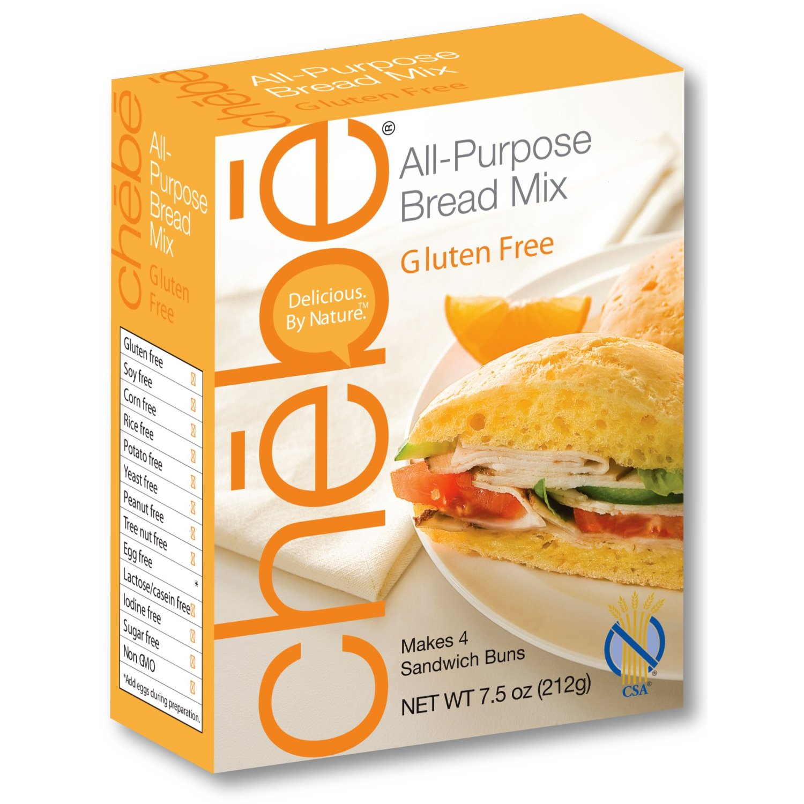 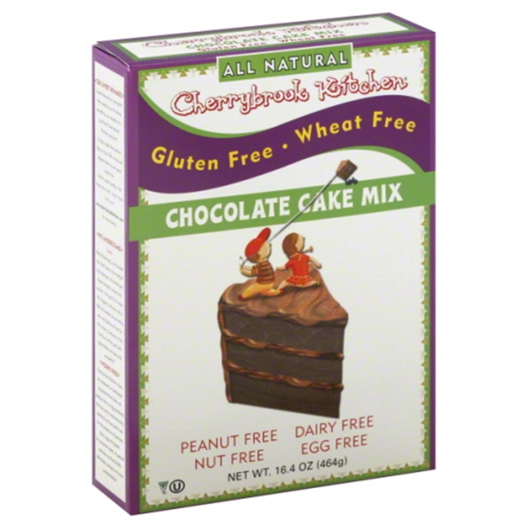 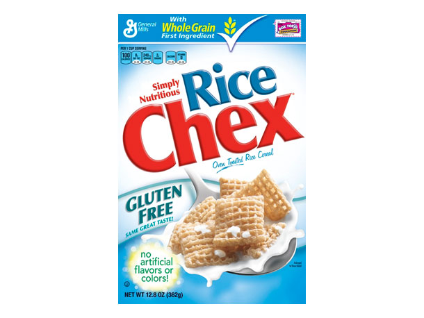 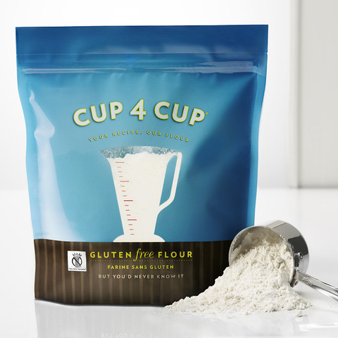 D: Deboles- Deboles is another pasta brand that is largely available and behind Bionature it is pretty good. 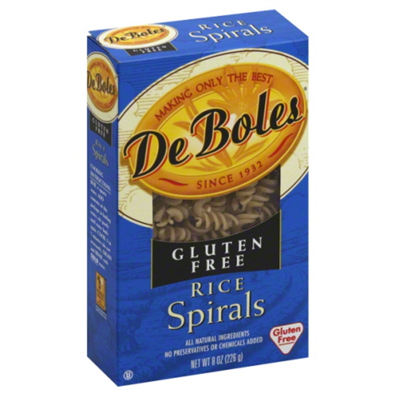 E: Enjoy Life Foods- This brand has a variety of products but some are better than others. Their best is called Plentils which are chips made from lentils. The sea salt flavor tastes just like Lays. Note: the cereal bars have a texture similar to rubber, Beware. 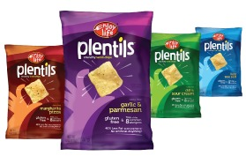 F: Food Should Taste Good- GREAT TORTILLA CHIPS. The Sweet Potato chips are my absolute favorite. Great flavor, texture, and all organic. Readily available and the prices are pretty good. Definitely a try if the brand is new to you. 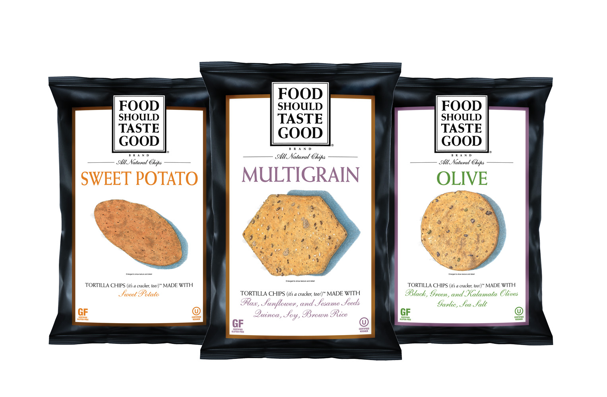 G: Glutenfreeda-This is my lifesaver while away at college. Their oatmeal has the BEST flavor and in my opinion is better than normal oatmeal. I’ve tried all of their varieties and have made my nutritionist order them for me at school: that’s how good they are. I always get the variety pack which has the Apple cinnamon, Banana Maple, and Maple Rasin in it. All are great but I’m not a banana super-fan so the others win in my book.
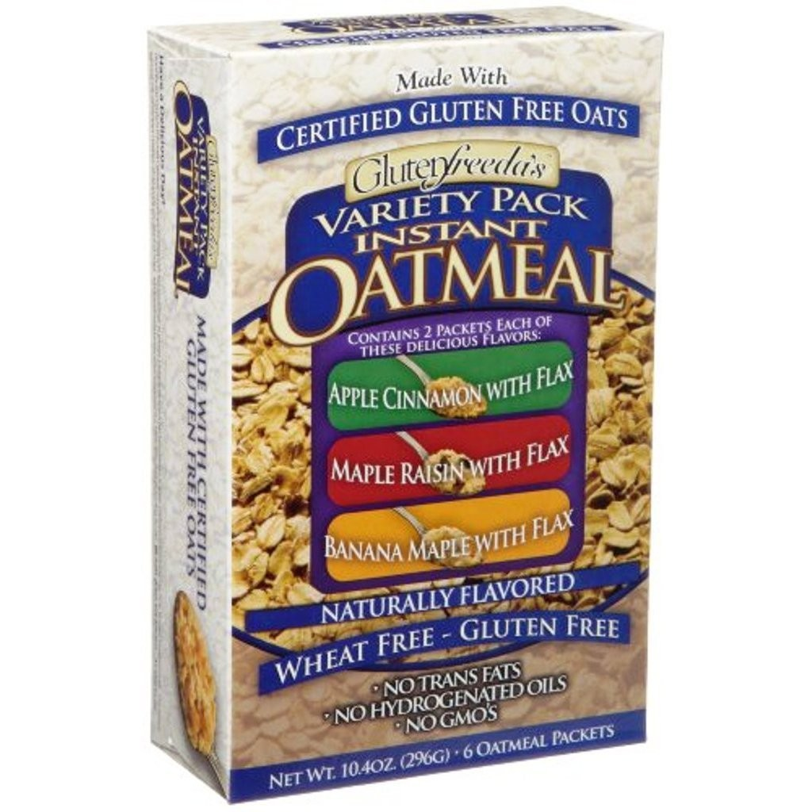 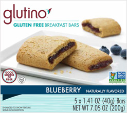 H: Haagen-Dazs- A classic dessert brand that makes great sorbet. The mango and Raspberry flavors are really tasty. 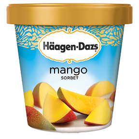 I: Imagine Foods- This brands has really good soups. I like the butternut and acorn squash with mango. Good flavor and is just thick enough. I eat these on occasion at school when I can find it. 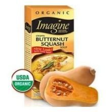
|